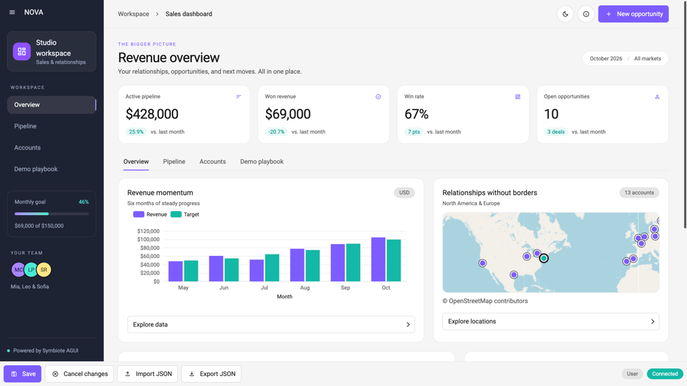

<agui-panel id="gallery-local-assets" class="grid gap-4">
  <h2>Local assets</h2>
  <figure class="grid justify-items-start gap-2">
    
    <figcaption class="text-sm text-agui-muted">The original AGUI image, served by this session.</figcaption>
  </figure>
  <agui-markdown id="gallery-local-document" src="../documents/brief.md"
    label="Local asset guide" bind="$.texts: MARKDOWN/markdownTexts"></agui-markdown>
  <sym-import src="../documents/panel.html"></sym-import>
  <agui-panel class="grid gap-3">
    <h3>Outside the imported fragment</h3>
    <dl class="grid gap-3">
      <div><dt class="text-xs text-agui-muted">Published stage</dt><dd>{{ASSETS/importStage}}</dd></div>
      <div><dt class="text-xs text-agui-muted">Published note</dt><dd>{{ASSETS/importNote}}</dd></div>
    </dl>
  </agui-panel>
</agui-panel>
